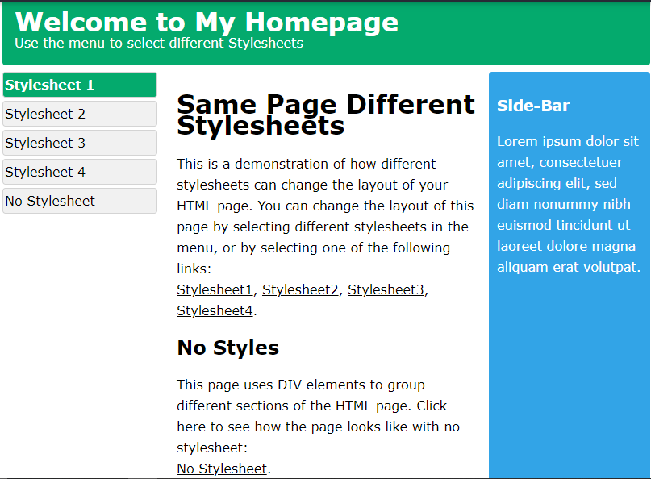
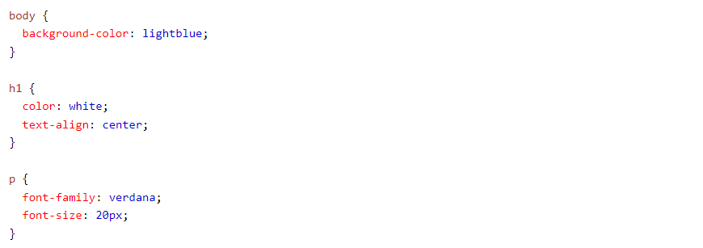

Here we will show one HTML page displayed with four different stylesheets. Click on the "Stylesheet 1", "Stylesheet 2", "Stylesheet 3", "Stylesheet 4" links below to see the different styles:
CSS is used to define styles for your web pages, including the design, layout and variations in display for different devices and screen sizes.
HTML was NEVER intended to contain tags for formatting a web page!
HTML was created to describe the content of a web page, like:
h1 This is a heading /h1
p This is a paragraph. p
When tags like font, and color attributes were added to the HTML 3.2 specification, it started a nightmare for web developers. Development of large websites, where fonts and color information were added to every single page, became a long and expensive process.
CSS removed the style formatting from the HTML page!
The style definitions are normally saved in external .css files. With an external stylesheet file, you can change the look of an entire website by changing just one file!